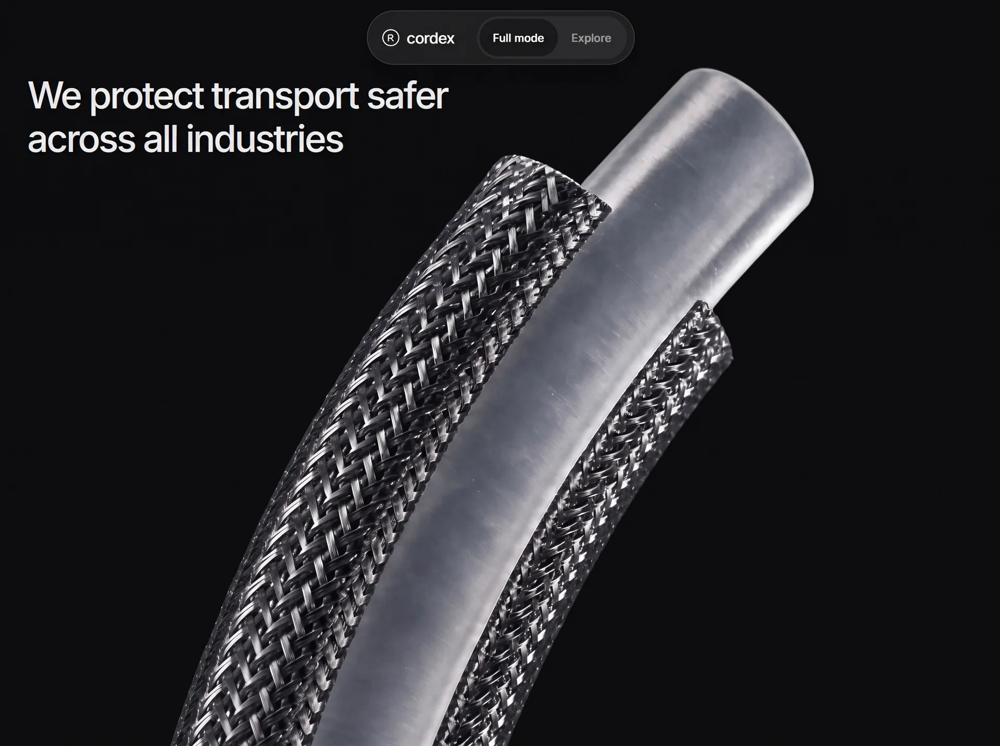

Cordex
Manufacturingmanufacturingyilai-ai 公开页面
收录时间：2026-09-12正文：30,183 字符

本地预览图 · webp
完整提示词
Build a single self-contained file `index.html` (no build step, no frameworks, no external JS libraries — one HTML file with an inline `<style>` and an inline `<script>`). It is a scroll-driven product landing page for a cable-protection brand called "cordex". Reproduce it exactly as specified below.
=====================================================================
0. THE ONE THING THAT MAKES THIS FEEL RIGHT
=====================================================================
The hero is a video scrubbed by scroll position. That only feels smooth if the MP4
is encoded ALL-INTRA (every frame a keyframe), because each scroll frame seeks to a
new time and a normal long-GOP encode must decode forward from the previous keyframe.
The URL given in section 7 is already encoded this way:
145 frames / 145 keyframes, H.264 High profile, yuv420p, 1928x1076, 24 fps,
6.04 s, 6.2 MB, 8.6 Mbps, faststart, no `stss` box (absent stss == all frames
are sync samples).
If you ever re-encode it, use:
ffmpeg -i in.mp4 -an -c:v libx264 -preset slow -profile:v high -pix_fmt yuv420p \
-crf 23 -g 1 -keyint_min 1 -sc_threshold 0 -movflags +faststart out.mp4
(`-g 1` is what forces every frame to be a keyframe.)
=====================================================================
1. DOCUMENT HEAD
=====================================================================
- `<!DOCTYPE html>`, `<html lang="en">`.
- `<meta charset="UTF-8">`
- `<meta name="viewport" content="width=device-width, initial-scale=1.0, viewport-fit=cover">` (viewport-fit=cover is required for the safe-area insets).
- `<title>cordex</title>`
- Do NOT add a `theme-color` meta tag.
- Preconnects and font, in this order:
<link rel="preconnect" href="https://fonts.googleapis.com" />
<link rel="preconnect" href="https://fonts.gstatic.com" crossorigin />
<link rel="preconnect" href="https://d2ol7oe51mr4n9.cloudfront.net" crossorigin />
<link href="https://fonts.googleapis.com/css2?family=Inter:wght@400;500;600;700&display=swap" rel="stylesheet" />
- Body font stack: `Inter, Helvetica Neue, Arial, sans-serif`.
=====================================================================
2. CORE ARCHITECTURE (the key mechanic — follow precisely)
=====================================================================
There are exactly TWO visual sections, both absolutely positioned inside ONE fixed
"stage" that fills the viewport. A separate empty `.track` div below supplies all the
scroll distance. Nothing scrolls visually — scroll position drives opacity, video
currentTime, and the active application index.
DOM order in `<body>`:
1. `.boot#boot` (fullscreen preloader, z-index 90)
2. `.nav-wrap > nav.nav` (fixed pill navbar, z-index 80)
3. `.stage#stage` (position:fixed, top/left 0, 100% x var(--vh), z-index 1, overflow hidden)
- `section.layer.hero#heroLayer`
- `section.layer.apps#appsLayer`
4. `.track#track` (position:relative, z-index 0 — height set by JS)
`.layer` = `position:absolute; inset:0; opacity:0; will-change:opacity;`
Scroll length constants (in viewport heights), set in JS:
HERO_VH = 4.4 → hero video scrub length
FADE_VH = 1.0 → crossfade hero → applications
STEP_VH = 1.0 → per application step
STEPS = APPS.length - 1 (= 4)
heroLen = 4.4 * vh
fadeLen = 1.0 * vh
appsLen = 1.0 * 4 * vh
appsStart = heroLen + fadeLen
track.style.height = appsStart + appsLen + vh (px)
`--vh` is set to `innerHeight + "px"` on `document.documentElement` on every layout
pass (mobile browser chrome resizing).
=====================================================================
3. CSS VARIABLES / RESET
=====================================================================
:root {
--ink: #f7f7f8;
--glass: rgba(36, 36, 38, 0.42);
--glass-2: rgba(28, 28, 30, 0.48);
--red: #e23b32;
--vh: 100vh;
--pad: clamp(14px, 4vw, 36px);
--nav-top: max(14px, env(safe-area-inset-top, 0px));
--safe-bottom: max(14px, env(safe-area-inset-bottom, 0px));
}
* { box-sizing: border-box; margin: 0; padding: 0; }
html { overflow-x: clip; }
body { background: #0a0a0b; color: var(--ink); font-family: Inter, Helvetica Neue, Arial, sans-serif; overflow-x: clip; }
button, a { font-family: inherit; color: inherit; }
=====================================================================
4. NAVBAR
=====================================================================
`.nav-wrap`: position fixed; top: var(--nav-top); left/right 0; z-index 80; display flex; justify-content center; `padding: 0 max(14px, env(safe-area-inset-left,0px)) 0 max(14px, env(safe-area-inset-right,0px))`; pointer-events none.
`.nav`: pointer-events auto; flex; align-items center; gap 18px; `max-width: min(100%, 520px)`; padding 6px 8px 6px 16px; border-radius 999px; background rgba(48,48,50,.55); border 1px solid rgba(255,255,255,.12); backdrop-filter blur(22px) (+ -webkit- prefix); box-shadow 0 10px 40px rgba(0,0,0,.18).
`.logo` (an `<a href="#top" aria-label="cordex">`): flex, align-items center, gap 8px, text-decoration none, padding-right 8px. Contains an inline SVG mark then `<span>cordex</span>` (font-size 18px, weight 500, letter-spacing -0.03em). `.logo svg { display:block }`.
Exact SVG logo (a circled "R"-style glyph):
<svg width="22" height="22" viewBox="0 0 24 24" fill="none">
<circle cx="12" cy="12" r="10.2" stroke="white" stroke-width="1.4"/>
<path d="M8.2 16.4V7.6h4.1c2.05 0 3.25 1.05 3.25 2.55 0 1.08-.62 1.95-1.62 2.28L16.4 16.4h-2.2l-2.18-3.55H10v3.55H8.2zm1.8-5.15h2.02c.92 0 1.48-.5 1.48-1.22S13 8.8 12.08 8.8H10v2.45z" fill="white"/>
</svg>
`.seg` segmented control: flex; align-items center; background rgba(255,255,255,.06); border-radius 999px; padding 3px. Two `<button type="button">`: `#btnFull` "Full mode" (starts with class `is-on`) and `#btnOverview` "Explore".
`.seg button`: border 0; background transparent; color rgba(255,255,255,.55); font-size 13px; weight 500; padding 8px 16px; min-height 44px; border-radius 999px; cursor pointer; `transition: background .25s ease, color .25s ease`; `-webkit-tap-highlight-color: transparent`.
`.seg button.is-on { background: rgba(22,22,24,.92); color:#fff; }`
=====================================================================
5. PRELOADER
=====================================================================
Markup, first thing inside `<body>`:
<div class="boot" id="boot">
<div class="bar"><i id="bootBar"></i></div>
<p id="bootPct">LOADING 0%</p>
</div>
.boot { position: fixed; inset: 0; z-index: 90; display: flex; flex-direction: column;
align-items: center; justify-content: center; gap: 16px; background: #0a0a0b;
transition: opacity 0.7s ease, visibility 0.7s; }
.boot.done { opacity: 0; visibility: hidden; }
.boot p { font-size: 12.5px; letter-spacing: 0.05em; color: rgba(255, 255, 255, 0.42); }
.bar { width: 150px; height: 1px; background: rgba(255, 255, 255, 0.16); overflow: hidden; }
.bar i { display: block; height: 100%; width: 100%; background: var(--ink); transform: scaleX(0); transform-origin: 0 50%; }
=====================================================================
6. HERO LAYER
=====================================================================
`.hero { background:#0a0a0b; isolation: isolate; }` ← isolation is REQUIRED so the video's `mix-blend-mode: screen` blends against the hero heading and the hero's own black background, and does not bleed onto the applications layer beneath.
Both hero children must remain `z-index: auto` (do NOT give them z-index) so no extra stacking context is created; paint order comes from DOM order — copy first, video second, so the video blends over the text.
`.hero-copy`: position absolute; inset 0; display flex; align-items flex-start; justify-content flex-start; text-align left; `padding: calc(88px + env(safe-area-inset-top,0px)) var(--pad) 0 max(var(--pad), env(safe-area-inset-left,0px))`; pointer-events none.
`.hero-copy h1`: font-weight 500; letter-spacing -0.045em; line-height 1.18; color rgba(255,255,255,.92); `font-size: clamp(24px, 3.6vw, 52px)`; `max-width: min(18ch, 100%)`.
Heading text (exact): `We protect transport safer across all industries`
`.hero-media`: position absolute; inset 0; pointer-events none.
`.hero-media video`: position absolute; inset 0; width/height 100%; `object-fit: cover`; `mix-blend-mode: screen`; `will-change: transform`; `transform: translateZ(0)`.
Video element markup (note: NO src attribute in the HTML — JS sets it):
<video id="heroVideo" muted playsinline webkit-playsinline preload="auto" disablepictureinpicture
poster="https://images.higgs.ai/?default=1&output=webp&url=https%3A%2F%2Fd8j0ntlcm91z4.cloudfront.net%2Fuser_38xzZboKViGWJOttwIXH07lWA1P%2Fhf_20260906_211619_45cae3f3-ef0b-4c80-8102-d1b92a895304.png&w=1920&q=85"></video>
=====================================================================
7. THE VIDEO URL
=====================================================================
const VIDEO_URL = "https://d2ol7oe51mr4n9.cloudfront.net/user_38xzZboKViGWJOttwIXH07lWA1P/77806b3d-8a1a-4df5-af52-0651710f8a85.mp4";
(All-intra, 6.2 MB — see section 0. Note this is a DIFFERENT CloudFront host from
the images, which are on d8j0ntlcm91z4 behind the images.higgs.ai proxy.)
=====================================================================
8. APPLICATIONS LAYER
=====================================================================
`.apps { background:#0d0d0e; }`
Five `.scene` divs, `data-i="0"` … `data-i="4"`; the first also has class `is-on`.
`.scene`: position absolute; inset 0; opacity 0; `transition: opacity .55s ease`.
`.scene.is-on { opacity: 1; }`
`.scene img`: position absolute; inset 0; width/height 100%; object-fit cover.
`.scene .bg`: `filter: blur(28px) saturate(1.08) brightness(0.55); transform: scale(1.14);`
`.scene .cable { z-index: 2; }`
Each scene contains exactly two `<img alt="">`: first `class="bg"`, then `class="cable"`. Use these EXACT URLs (images.higgs.ai proxy URLs wrapping d8j0ntlcm91z4.cloudfront.net originals, w=1920&q=85):
scene 0 bg:
https://images.higgs.ai/?default=1&output=webp&url=https%3A%2F%2Fd8j0ntlcm91z4.cloudfront.net%2Fuser_38xzZboKViGWJOttwIXH07lWA1P%2Fhf_20260906_195408_3baa90af-104c-4651-a954-4c32d032f447.png&w=1920&q=85
scene 0 cable:
https://images.higgs.ai/?default=1&output=webp&url=https%3A%2F%2Fd8j0ntlcm91z4.cloudfront.net%2Fuser_38xzZboKViGWJOttwIXH07lWA1P%2Fhf_20260906_205336_d8018410-76ae-4756-bce5-51737d6c83a2.png&w=1920&q=85
scene 1 bg:
https://images.higgs.ai/?default=1&output=webp&url=https%3A%2F%2Fd8j0ntlcm91z4.cloudfront.net%2Fuser_38xzZboKViGWJOttwIXH07lWA1P%2Fhf_20260906_195510_80256fb7-1e2d-4135-be89-85b9c9736604.png&w=1920&q=85
scene 1 cable:
https://images.higgs.ai/?default=1&output=webp&url=https%3A%2F%2Fd8j0ntlcm91z4.cloudfront.net%2Fuser_38xzZboKViGWJOttwIXH07lWA1P%2Fhf_20260906_205412_dea76893-5f89-4ef5-ad3f-6d5889502ed4.png&w=1920&q=85
scene 2 bg:
https://images.higgs.ai/?default=1&output=webp&url=https%3A%2F%2Fd8j0ntlcm91z4.cloudfront.net%2Fuser_38xzZboKViGWJOttwIXH07lWA1P%2Fhf_20260906_195543_44e0ac0c-4c7b-4a94-a8b0-935bd48a1503.png&w=1920&q=85
scene 2 cable:
https://images.higgs.ai/?default=1&output=webp&url=https%3A%2F%2Fd8j0ntlcm91z4.cloudfront.net%2Fuser_38xzZboKViGWJOttwIXH07lWA1P%2Fhf_20260906_205443_924891fc-e4fa-452d-a187-95614fdc06eb.png&w=1920&q=85
scene 3 bg:
https://images.higgs.ai/?default=1&output=webp&url=https%3A%2F%2Fd8j0ntlcm91z4.cloudfront.net%2Fuser_38xzZboKViGWJOttwIXH07lWA1P%2Fhf_20260906_195629_69f05c67-a2fe-4235-a5ff-233c0bdda517.png&w=1920&q=85
scene 3 cable:
https://images.higgs.ai/?default=1&output=webp&url=https%3A%2F%2Fd8j0ntlcm91z4.cloudfront.net%2Fuser_38xzZboKViGWJOttwIXH07lWA1P%2Fhf_20260906_205904_ad824661-4b68-42c0-b922-22b11ccff041.png&w=1920&q=85
scene 4 bg:
https://images.higgs.ai/?default=1&output=webp&url=https%3A%2F%2Fd8j0ntlcm91z4.cloudfront.net%2Fuser_38xzZboKViGWJOttwIXH07lWA1P%2Fhf_20260906_195701_5e5cb558-d608-44b3-81af-6098c19701f9.png&w=1920&q=85
scene 4 cable:
https://images.higgs.ai/?default=1&output=webp&url=https%3A%2F%2Fd8j0ntlcm91z4.cloudfront.net%2Fuser_38xzZboKViGWJOttwIXH07lWA1P%2Fhf_20260906_210026_33e66723-2c92-4fa2-89ba-8da99891d131.png&w=1920&q=85
After the five scenes, inside `.apps`:
<div class="apps-ui">
<div class="menu" id="menu"></div> <!-- built by JS -->
<div class="hotspot" aria-hidden="true"><i></i></div>
<article class="card" id="card"></article> <!-- built by JS -->
</div>
<a class="more" id="more" href="#">Learn more about…</a>
`.apps-ui`: position absolute; inset 0; z-index 5; `display:grid; grid-template-columns: auto 1fr auto; align-items:end;`
padding: `calc(88px + env(safe-area-inset-top,0px)) max(var(--pad), env(safe-area-inset-right,0px)) calc(34px + var(--safe-bottom)) max(var(--pad), env(safe-area-inset-left,0px))`; pointer-events none.
`.apps-ui > * { pointer-events: auto; }`
`.menu`: width 320px; background var(--glass); border 0; backdrop-filter blur(28px) (+webkit); border-radius 10px; padding 22px 18px.
`.opt` (menu buttons): display block; width 100%; text-align left; background none; border 0; color rgba(255,255,255,.42); font-size 17px; weight 500; letter-spacing -0.02em; padding 9px 4px; min-height 44px; cursor pointer; `transition: color .25s ease`; `-webkit-tap-highlight-color: transparent`.
`.opt.is-on { color:#fff; }`
`.opt img`: display block; width 100%; height 0; object-fit cover; border-radius 8px; margin 0; opacity 0; `transition: height .45s ease, opacity .35s ease, margin .45s ease`.
`.opt.is-on img { height: 172px; margin: 12px 0 10px; opacity: 1; }` ← the thumbnail expands open on the active item.
`.hotspot`: 54x54; margin 0 auto; align-self center; border 1.5px solid rgba(255,255,255,.85); border-radius 50%; display grid; place-items center; pointer-events none.
`.hotspot i { width:8px; height:8px; background:#fff; border-radius:50%; }`
`.card`: `width: min(420px, 34vw)`; background var(--glass-2); border 0; backdrop-filter blur(28px) (+webkit); border-radius 14px; padding 28px 28px 26px; min-height 280px.
`.card h2`: `font-size: clamp(28px, 2.8vw, 42px)`; weight 600; letter-spacing -0.04em; margin-bottom 22px.
`.spec`: display flex; gap 10px; margin 0 0 16px; align-items flex-start.
`.spec b`: display block; width 3px; height 14px; margin-top 3px; background var(--red); flex-shrink 0; border-radius 2px. ← the small red tick beside each spec.
`.spec small`: display block; font-size 10px; letter-spacing .12em; text-transform uppercase; color rgba(255,255,255,.55); weight 600; margin-bottom 4px.
`.spec span`: font-size 15px; weight 500; word-break break-word.
`.tag`: display inline-block; margin-top 4px; background var(--red); color #fff; font-size 11px; weight 600; padding 4px 8px; border-radius 6px; max-width 100%; word-break break-word.
`.swatches { display:flex; gap:8px; margin-top:8px; }`
`.swatches i { width:18px; height:18px; border-radius:50%; border:1px solid rgba(255,255,255,.35); display:block; }`
`.more`: position absolute; left 50%; `bottom: calc(14px + var(--safe-bottom))`; transform translateX(-50%); z-index 6; border 0; background rgba(20,20,22,.28); backdrop-filter blur(16px); color rgba(255,255,255,.78); padding 12px 20px; border-radius 999px; font-size 14px; weight 500; text-decoration none; text-align center; `max-width: calc(100% - 28px)`; white-space normal; line-height 1.3; `-webkit-tap-highlight-color: transparent`.
=====================================================================
9. DATA — the APPS array (exact content, in this order)
=====================================================================
const APPS = [
{ label: "Construction equipment", title: "Armatex CHG", more: "More about Armatex CHG",
thumb: <scene 0 bg URL but with &w=640&q=80 instead of &w=1920&q=85>,
specs: [
{ k: "Service temperature", v: "−55°C to +200°C" },
{ k: "Impact resistance", v: "LV 312-3 X < 25" },
{ k: "Wear resistance", tag: "ISO 6722-1 CLASS 4" }
] },
{ label: "Electric & hybrid", title: "Armatex VHG10 Purple", more: "More about Armatex VHG10",
thumb: <scene 1 bg URL with &w=640&q=80>,
specs: [
{ k: "Service temperature", v: "−70°C to +225°C (Peaks at +300°C)" },
{ k: "Impact resistance", v: "LV 312-3 X < 25" }
] },
{ label: "Buses and trucks", title: "Flexline PS", more: "More about Flexline PS",
thumb: <scene 2 bg URL with &w=640&q=80>,
colors: ["#111", "#e85a1a", "#f4f4f4", "#7a4aa8"],
specs: [
{ k: "Service temperature", v: "−70°C to +150°C" },
{ k: "Stretch ratio", v: "1:2" },
{ k: "Wear resistance", tag: "ISO 6722-1 CLASS 4 (4,000 – 14,999 CYCLES)" }
] },
{ label: "Rail systems", title: "Flexline RX", more: "More about Flexline RX",
thumb: <scene 3 bg URL with &w=640&q=80>,
specs: [
{ k: "Service temperature", v: "−50°C to +180°C" },
{ k: "Fire performance", v: "EN 45545-2 HL3" },
{ k: "Shock rating", v: "IEC 61373 Category 1" }
] },
{ label: "Agricultural machines", title: "Armatex AG", more: "More about Armatex AG",
thumb: <scene 4 bg URL with &w=640&q=80>,
specs: [
{ k: "Service temperature", v: "−40°C to +150°C" },
{ k: "Dirt & moisture", v: "IP6K9K sealed jackets" },
{ k: "Wear resistance", tag: "ISO 6722-1 CLASS 3" }
] }
];
(Use the real U+2212 minus sign "−" and en dash "–" exactly as written. `tag` renders
as a red pill instead of plain text; `colors` renders a "SUPPLIED IN" swatch row.)
=====================================================================
10. JAVASCRIPT
=====================================================================
Element handles: video(#heroVideo), heroLayer, appsLayer, track, scenes(.scene[]),
menu, card, more, btnFull, btnOverview, boot, bootBar, bootPct.
Helpers:
const clamp = (n,a,b) => Math.max(a, Math.min(b,n));
const range = (v,a,b) => clamp((v-a)/(b-a), 0, 1);
const MOBILE_BP = 900;
const STEPS = APPS.length - 1;
State:
let heroTarget = 0; // 0..1, straight from scroll
let seekAt = 0; // seconds, eased toward heroTarget * dur
let dur = 6;
let ready = false;
let raf = 0, index = -1, wheelLock = false;
let vh = innerHeight, lastW = innerWidth;
let heroLen = 0, fadeLen = 0, appsLen = 0, appsStart = 0;
layout(force):
// A 0-height viewport (hidden/prerendered tab, mid-orientation-change on some
// mobile browsers) would make heroLen 0 and turn every scroll ratio into NaN,
// which propagates into setIndex and blanks the page.
const h = Math.max(1, innerHeight);
if (!force && innerWidth === lastW && Math.abs(h - vh) < 120) return; // ignores mobile URL-bar jitter
vh = h; lastW = innerWidth;
set `--vh` on documentElement to h+"px";
recompute heroLen/fadeLen/appsLen/appsStart and set track height.
Menu build: for each APPS item create `<button type="button" class="opt">` (index 0
also `is-on`) with innerHTML `` `${item.label}<img alt="" src="${item.thumb}">` ``,
click → setIndex(i, false). Collect into `opts`.
--- preloader / video attach ---
let started = false, attached = false;
setBootProgress(fraction): bootBar.style.transform = "scaleX("+fraction+")";
bootPct.textContent = "LOADING " + Math.round(fraction*100) + "%";
start(): guard on `started`; set started = ready = true; boot.classList.add("done");
heroTarget = clamp((scrollY||0)/heroLen, 0, 1); seekAt = heroTarget * dur;
renderCard(0); paintUI();
attach(src): guard on `attached`; then
- on "loadedmetadata": dur = isFinite(video.duration) && video.duration > 0 ? video.duration : 6;
video.pause(); heroTarget = clamp((scrollY||0)/heroLen,0,1); seekAt = heroTarget*dur;
try { video.currentTime = seekAt; } catch(e) {}
- start() on "loadeddata", "canplaythrough" and "error"
- video.src = src; video.load();
- setTimeout(start, 12000) // never strand the page behind a stalled decode
preload(): pull the clip down whole before handing the page over — seeking inside a
fully buffered blob is near instant, where seeking a streaming video turns every
scroll frame into a range request.
- const ctrl = "AbortController" in window ? new AbortController() : null;
- const bail = setTimeout(() => { if (attached) return; if (ctrl) ctrl.abort();
setBootProgress(1); attach(VIDEO_URL); }, 15000);
- fetch(VIDEO_URL, ctrl ? {signal:ctrl.signal} : undefined) → if (!res.ok || !res.body) throw;
read `content-length` into `total`; pump res.body.getReader() collecting chunks,
calling setBootProgress(total ? got/total : Math.min(got/6.5e6, 0.95)) per chunk;
resolve to new Blob(chunks, {type:"video/mp4"}).
- .then(blob): clearTimeout(bail); setBootProgress(1); attach(URL.createObjectURL(blob));
- .catch(): clearTimeout(bail); setBootProgress(1); attach(VIDEO_URL); // CORS, abort or offline
unlock(): iOS will not paint a frame from a video that has never been played, so
nudge it once and pause immediately:
const p = video.play(); if (p && p.then) p.then(()=>video.pause()).catch(()=>{}); else video.pause();
Registered as: ["touchstart","pointerdown","wheel","keydown"].forEach(ev =>
addEventListener(ev, unlock, { once:true, passive:true }));
--- rendering ---
renderCard(i): card.innerHTML = `<h2>${title}</h2>` + one `.spec` block per spec:
`<div class="spec"><b></b><div><small>${s.k}</small>${s.tag ? `<span class="tag">${s.tag}</span>` : `<span>${s.v}</span>`}</div></div>`
plus, if `item.colors`, a final spec block with `<small>Supplied in</small>` and
`<div class="swatches">` of `<i style="background:${c}"></i>`.
Also set `more.textContent = item.more`.
setIndex(i, fromScroll):
if (!Number.isFinite(i)) return;
next = clamp(i, 0, STEPS). If next !== index: update index; toggle `is-on` on scenes
and opts by index; renderCard(index); and if `innerWidth <= MOBILE_BP`, horizontally
centre the active `.opt` inside `.menu` via getBoundingClientRect and
`menu.scrollBy({left: (a.left + a.width/2) - (m.left + m.width/2), behavior:"smooth"})`.
If `!fromScroll`: `scrollTo({ top: appsStart + (index/STEPS)*appsLen, behavior:"smooth" })`.
paintUI() — runs every rAF tick, so it only touches the DOM when a value has actually
changed; blind writes cost a style recalc per frame. Keep module-level caches
`let lastFade = -1; let lastOnApps = null;`
y = scrollY || pageYOffset;
fadeP = range(y, heroLen, appsStart);
if (fadeP !== lastFade) { lastFade = fadeP;
heroLayer.style.opacity = 1 - fadeP; appsLayer.style.opacity = fadeP;
heroLayer.style.visibility = fadeP === 1 ? "hidden" : "visible";
appsLayer.style.visibility = fadeP === 0 ? "hidden" : "visible"; }
setIndex(Math.round(range(y, appsStart, appsStart + appsLen) * STEPS), true);
onApps = fadeP > 0.5;
if (onApps !== lastOnApps) { lastOnApps = onApps;
btnFull.classList.toggle("is-on", !onApps);
btnOverview.classList.toggle("is-on", onApps); }
frame() — THE SCRUB LOOP. currentTime is eased toward the scroll target every frame
rather than snapped to it, and a seek is only issued when the decoder is not already
mid-seek. `video.seeking` is browser state rather than an event, so unlike a "seeked"
listener it cannot be missed and cannot deadlock the scrub.
if (ready && dur) {
const gap = heroTarget * dur - seekAt;
if (Math.abs(gap) > 0.0008) {
seekAt += gap * 0.115;
if (video.readyState >= 2 && !video.seeking) {
try { video.currentTime = seekAt; } catch (e) {}
}
}
}
paintUI();
raf = requestAnimationFrame(frame);
--- events ---
- `scroll` (passive): heroTarget = clamp((scrollY||0)/heroLen, 0, 1).
- `resize`: layout(false) then recompute heroTarget.
- `orientationchange`: layout(true) then recompute heroTarget.
- inAppsZone(): y >= appsStart - 1 && y <= appsStart + appsLen + 1.
- `wheel` (passive:false): if not in apps zone or wheelLock, return. down = deltaY > 0.
If (down && index >= STEPS) or (!down && index <= 0), return (lets the page scroll
past normally). Else preventDefault(), wheelLock = true, setIndex(index ± 1, false),
release the lock after 620 ms. → one wheel gesture = exactly one application step.
- `touchstart` (passive) records clientY/clientX; `touchend` (passive) computes
dy = startY - endY and dx = |startX - endX|; ignore if |dy| < 40 or dx > 60 or not
in apps zone; else step one application in the swipe direction (same edge guards).
- btnFull click → scrollTo({top:0, behavior:"smooth"}); btnOverview click →
scrollTo({top: appsStart, behavior:"smooth"}).
- `visibilitychange`: hidden → cancelAnimationFrame(raf); visible → raf = requestAnimationFrame(frame).
--- bootstrap, in exactly this order, at the end of the script ---
video.pause();
video.muted = true;
layout(true);
renderCard(0);
paintUI();
preload();
raf = requestAnimationFrame(frame);
(The rAF loop starts immediately and paints the UI while the clip downloads behind
the preloader; `ready` stays false so no seek is issued until start() fires.)
=====================================================================
11. RESPONSIVE / MOBILE (implement exactly)
=====================================================================
@media (max-width: 1024px):
.menu { width: min(320px, 38vw); }
.card { width: min(420px, 40vw); }
@media (max-width: 900px): ← the main mobile breakpoint; matches MOBILE_BP in JS
.nav-wrap { padding: 0 10px; }
.nav { gap: 8px; padding: 4px 4px 4px 10px; width: 100%; max-width: 100%; }
.logo { padding-right: 4px; min-width: 0; }
.logo span { font-size: 15px; }
.seg { flex-shrink: 0; }
.seg button { font-size: 11px; padding: 8px 10px; }
.hero-copy { padding: calc(76px + env(safe-area-inset-top,0px)) max(14px, env(safe-area-inset-right,0px)) 0 max(14px, env(safe-area-inset-left,0px)); }
.hero-copy h1 { font-size: clamp(22px, 6.2vw, 28px); line-height: 1.22; max-width: 100%; }
.apps-ui {
grid-template-columns: 1fr; grid-template-rows: auto auto; align-content: end; gap: 10px;
padding: calc(72px + env(safe-area-inset-top,0px)) max(14px, env(safe-area-inset-right,0px)) calc(58px + var(--safe-bottom)) max(14px, env(safe-area-inset-left,0px));
}
.hotspot { display: none; }
.menu { /* becomes a horizontal snap-scroll strip UNDER the card */
order: 2; width: 100%; display: flex; gap: 8px;
overflow-x: auto; overflow-y: hidden; padding: 10px;
scrollbar-width: none; -webkit-overflow-scrolling: touch;
scroll-snap-type: x proximity;
}
.menu::-webkit-scrollbar { display: none; }
.card { order: 1; width: 100%; min-height: 0; padding: 18px 16px; }
.card h2 { font-size: clamp(22px, 6vw, 26px); margin-bottom: 12px; }
.opt { flex: 0 0 auto; width: min(168px, 44vw); font-size: 13px; line-height: 1.25; padding: 8px 6px; scroll-snap-align: center; }
.opt img { display: none; }
.opt.is-on img { display: block; height: 64px; margin: 8px 0 6px; }
.spec { margin-bottom: 12px; }
.spec span { font-size: 14px; }
.spec small { font-size: 9px; }
.more { bottom: calc(10px + var(--safe-bottom)); font-size: 12px; padding: 10px 16px; }
@media (max-width: 480px):
.seg button { font-size: 10px; padding: 8px 8px; }
.logo svg { width: 18px; height: 18px; }
.logo span { font-size: 14px; }
.hero-copy h1 { font-size: 21px; }
.opt { width: min(152px, 48vw); font-size: 12px; }
.card h2 { font-size: 21px; }
.tag { font-size: 10px; padding: 3px 6px; }
@media (max-height: 500px) and (orientation: landscape):
.hero-copy { padding-top: calc(64px + env(safe-area-inset-top,0px)); }
.hero-copy h1 { font-size: 20px; max-width: 24ch; }
.apps-ui { padding-top: calc(56px + env(safe-area-inset-top,0px)); padding-bottom: calc(48px + var(--safe-bottom)); gap: 8px; }
.card { padding: 14px; }
.card h2 { font-size: 20px; margin-bottom: 8px; }
.spec { margin-bottom: 8px; }
.opt.is-on img { height: 48px; }
Mobile-critical details to preserve: all touch targets ≥44px tall;
`-webkit-tap-highlight-color: transparent` on every button and the `.more` pill;
`playsinline` + `webkit-playsinline` + `muted` on the video so iOS never goes
fullscreen, plus the first-interaction `unlock()`; `--vh` in px rather than `100vh`
so iOS Safari's collapsing URL bar doesn't resize the stage; the 120px threshold in
layout() so that same URL-bar movement doesn't trigger a relayout; the
`Math.max(1, innerHeight)` floor; every edge padding via `env(safe-area-inset-*)`.
=====================================================================
12. EXPECTED RESULT
=====================================================================
The page opens on a dark preloader counting LOADING 0→100% while the 6.2 MB clip is
fetched into a blob, then fades away. Scrolling from the top scrubs the hero MP4
frame-by-frame (screen-blended over black with the headline behind it) across ~4.4
viewport heights, eased at 0.115 so it glides rather than snaps. Over the next
viewport height the hero crossfades out and the applications layer crossfades in, and
the nav pill's active segment flips from "Full mode" to "Explore". Inside the
applications zone each wheel notch or vertical swipe advances one product: the blurred
background + sharp cable image crossfade over 0.55s, the left menu highlights the item
and expands its thumbnail, and the right glass card re-renders with name and specs. At
the last product, further scrolling releases back to normal page scroll. On ≤900px the
menu becomes a horizontally snap-scrolling chip row below the card, auto-centring the
active chip.
Deliver the finished `index.html` only.把上面的提示词完整复制到支持长文本的 AI 工具中，再按需要替换品牌名、配色与文案。提示词描述的是整页结构与动效节奏，生成后建议在真实浏览器里检查首屏加载和移动端表现。
来源与版权
该条目来自公开提示词页面，原始出处信息未随页面提供。
提示词文本与预览素材的版权归原作者或原平台所有，本站仅作索引与归档。若你是权利人并希望移除本条内容，请通过联系方式告知。
同分类提示词
暂无同分类条目。